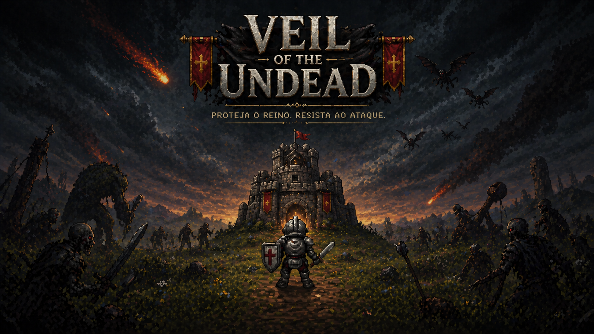
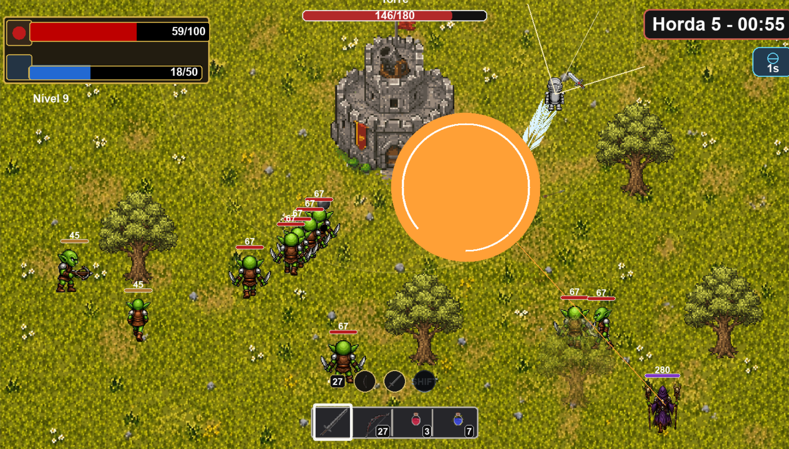
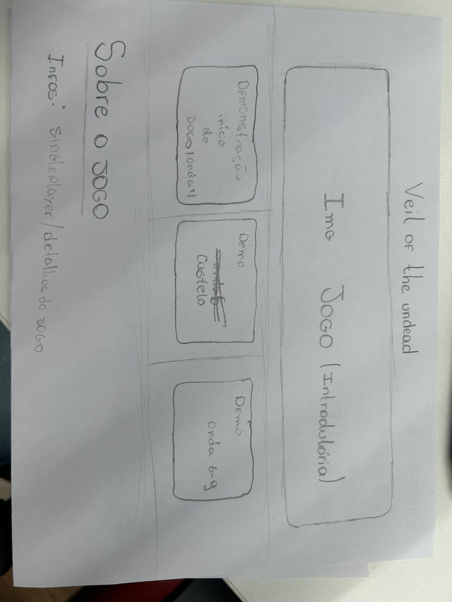

Gênero
Tower Defense com ação, estratégia e progressão por ondas.
Tower Defense em Pygame
Proteja o reino, resista às hordas e defenda o castelo contra criaturas sedentas por sangue e preciosidades.
Baixar jogo
Sobre o jogo
Tower Defense com ação, estratégia e progressão por ondas.
Singleplayer, feito para uma jornada individual de defesa.
Sobreviva às hordas, ganhe recompensas, fortaleça suas defesas e impeça que os inimigos destruam o castelo.
Demonstrações



Download
Clique no botão para baixar o jogo como um arquivo executável único. Depois do download, basta abrir o arquivo para jogar.
Gameplay
Informações
Antes de cada horda, o jogador analisa o cenário e se prepara para defender o castelo.
Durante o ataque, é preciso reagir rápido, usar habilidades e impedir que os inimigos avancem.
A cada rodada, novas recompensas ajudam o cavaleiro a ficar mais forte para os próximos desafios.
Processo

Processo